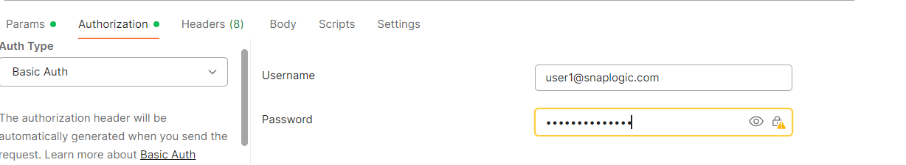
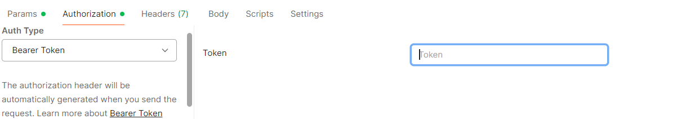

Retrieve info about pipeline executions matching a filter
<span class="ph" id="get-runtime-org__ph-method">GET
</span>
<span class="ph">https://
<a class="xref" href="public-apis-about.html#public-apis__base-url">{controlplane_path}
</a>/api/1/rest/public
</span>
<span class="ph" id="get-runtime-org__ph-sig">/runtime/{env_org}
</span>This API retrieves information about pipeline executions that match the specified filters.
Prerequisites
- Read access to the requested assets
Request
<span class="ph">GET
</span>
<span class="ph">
<span class="ph">https://{controlplane_path}
</span>
<span class="ph">/api/1/rest/public
</span>
</span>
<span class="ph">/runtime/{env_org}
</span>?{query_parameters}Path parameters
| Key | Description |
|---|---|
controlplane_path |
Required. The path to the SnapLogic control plane:
elastic.snaplogic.com
For the UAT or EMEA control plane, substitute the name for elastic. For
example:
|
env_org |
Required. The name of the SnapLogic environment/Org. For example,
My-Dev-Env |
Query parameters
- You can use the
stateandlast_hoursparameters to retrieve a list of running pipelines for a timespan. However, the response might not include all pipelines that ran during that time because the missing runtimes started or completed outside of the specified timespan. - If a timespan is not set, this API returns information about pipeline executions within the last hour.
| Key | Type | Description |
|---|---|---|
plex_label |
string | Returns information about pipeline executions for the specified Snaplex. |
cc_label |
string | Returns information about pipeline executions for the specified CC label (JCC node’s hostname). |
pipe_name |
string | Returns information about the specified pipeline execution. |
user_id |
string | Returns information about pipeline executions triggered by the specified user. |
state |
string | Returns information about pipeline executions in the specified state. Valid values:
Default:
|
invoker |
string | Returns information about pipeline executions that were invoked in the specified way.
Valid values:
If no filter is applied the status is displayed as |
project_path |
string | Returns information about pipeline executions for the specified project. Allowed
formats:
|
only_owned |
boolean | Filters pipeline execution results by ownership.
Valid values:
Default: If this parameter is not specified, the default behavior applies (shows all executions based on permissions). Note: This parameter applies only to admin users. Non-admin users always see only their owned executions regardless of this parameter value. |
last_hours |
integer | Returns information about pipeline executions within the specified number of hours,
counting backward from the current time. Valid values: 1 through 1080 hours (45 days) Default: 1 |
start |
integer | Returns information about pipeline executions since the specified time. Provide time as Unix time in milliseconds. |
end |
integer | Returns information about pipeline executions before the specified time. Provide time as Unix time in milliseconds. |
limit |
integer | Returns no more than the specified number of results.
You can use limit and offset for
pagination.
Valid values: 1 through 1,000 Default: 10 |
offset |
integer | Returns a subset of the results starting at this 0-based index.
You can use limit and offset for
pagination.
Default: 0 |
Request header
Basic authentication
To use basic authentication, specify Basic for authorization in the request
header, add your credentials (email and password for your SnapLogic user or service account), and
specify application/json for content type. For example:
Authorization: Basic {base64_encoded <email>:<password>}
Content-Type: application/json
Example of basic authentication using Postman:

Learn more about the basic authentication header in REST API requests.
JWT authentication
When using JWT authentication, the API request includes specific headers. In the request header,
specify Bearer Token for authorization, add the token, and specify
application/json for content type. These headers are automatically added when
you configure bearer token authentication in your API client. The authorization header contains
the word Bearer followed by a space and your JWT.
Authorization: Bearer Token {token}
Content-Type: application/json
Example of JWT authentication using Postman:

Request body
None.
Response
 Note:
The results include:
Note:
The results include:
- Only the pipeline executions that you have permissions to view. Environment/Org admins can view all pipeline executions unless the
only_ownedquery parameter is set totrue, in which case they will only see their own executions. - Up to 500 of the most recent runs of a child pipeline within a single run of the parent pipeline.
{
"response_map": {
"entries": [
{
"pipe_id": "...",
"has_lints": true,
"documents": ...,
"user_id": "...",
"ccid": "...",
"child_has_lints": true,
"runtime_path_id": "...",
"parent_ruuid": "...",
"subpipes": { ... },
"state_timestamp": "...",
"error_documents": ...,
"label": "...",
"path_id": "...",
"state": "...",
"create_time": "...",
"invoker": "...",
"duration": ...,
"cc_label": "...",
"id": "...",
"runtime_label": "...",
"mode": "..."
}
],
"total": ...,
"limit": ...,
"offset": ...
},
"http_status_code": 200
}
| Key | Type | Description |
|---|---|---|
entries |
array | An array of objects containing metadata about each pipeline execution. |
pipe_id |
string | The ID of the pipeline. |
has_lints |
Boolean | If pipeline finished with lints warning. |
documents |
integer | |
user_id |
string | The user who ran the pipeline. |
ccid |
string | The ID of the JCC node where the pipeline ran. |
child_has_lints |
Boolean | |
runtime_path_id |
string | The identifier of the Snaplex.
Format:
|
parent_ruuid |
string | The Runtime ID of the parent pipeline that triggered this child pipeline. |
subpipes |
object | |
state_timestamp |
string | |
error_documents |
integer | |
label |
string | The name of the pipeline. |
path_id |
string | Project path of the pipeline. |
state |
string | The status of the pipeline execution. Valid values:
|
create_time |
string | The time when the pipeline execution instance was created. Format: UTC |
invoker |
string | The user who invoked the pipeline execution. |
duration |
integer | The length of time that the pipeline ran, expressed in seconds. |
cc_label |
string | |
id |
string | The ID of the pipeline execution. |
runtime_label |
string | The name of the pipeline. |
mode |
string | The mode of the pipeline execution.
Possible values:
|
total |
integer | The total number of results available. |
limit |
integer | The number of results returned. |
offset |
integer | The index of the first result returned. |
Examples
- To retrieve the status of executed Tasks within the Environment/Org for the last hour,
GET https://elastic.snaplogic.com/api/1/rest/public/runtime/myEnvOrg - To retrieve the status of executed Tasks within the Environment/Org for a specified time range,
GET https://elastic.snaplogic.com/api/1/rest/public/runtime/myEnvOrg?start=&end= - To retrieve the status of executed Tasks for the last 4 hours,
GET https://elastic.snaplogic.com/api/1/rest/public/runtime/myEnvOrg?last_hours=4 - To retrieve only pipeline executions owned by the authenticated admin user for the last hour,
GET https://elastic.snaplogic.com/api/1/rest/public/runtime/myEnvOrg?only_owned=true